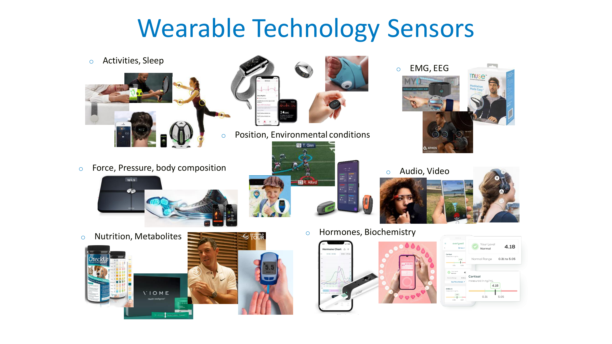
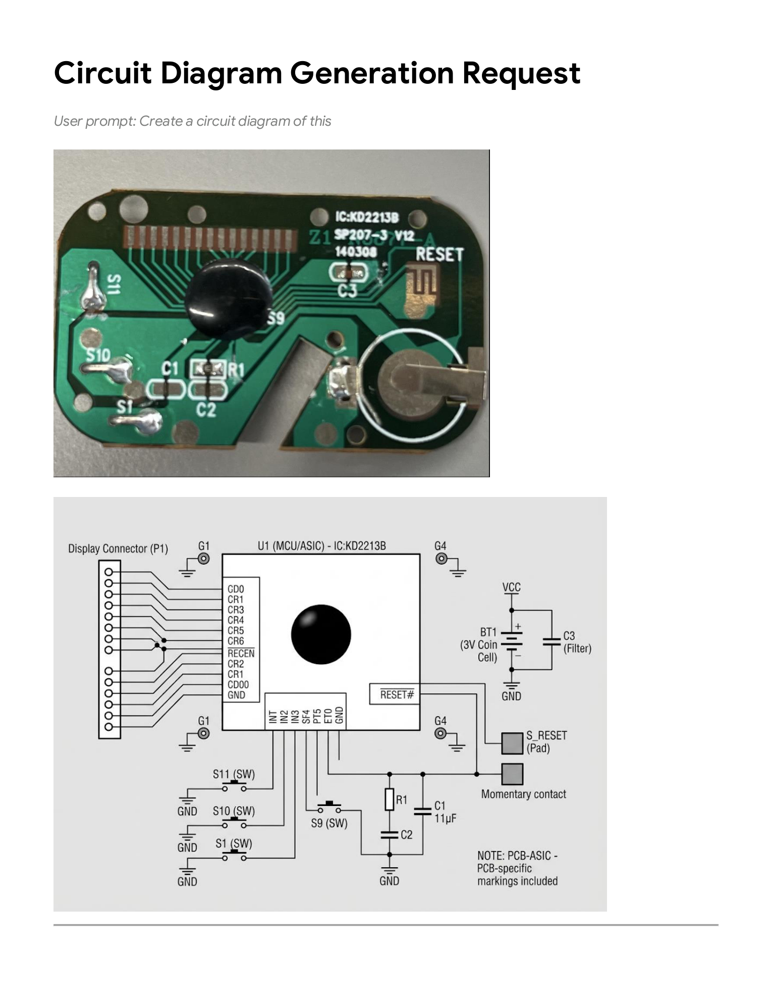
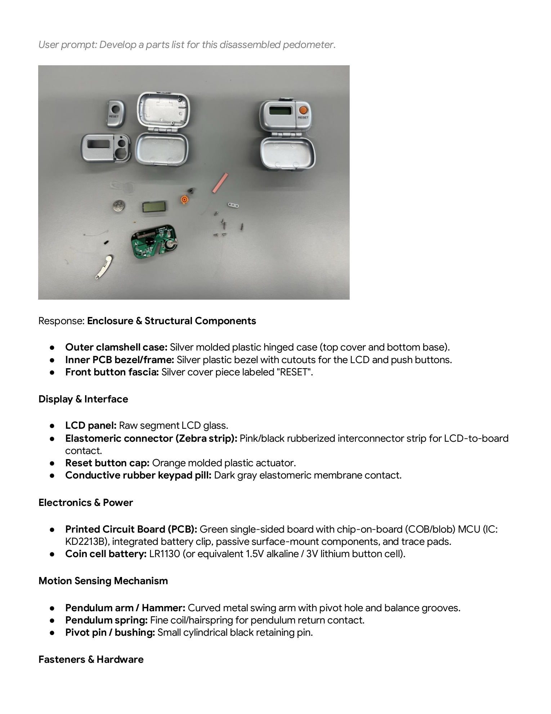
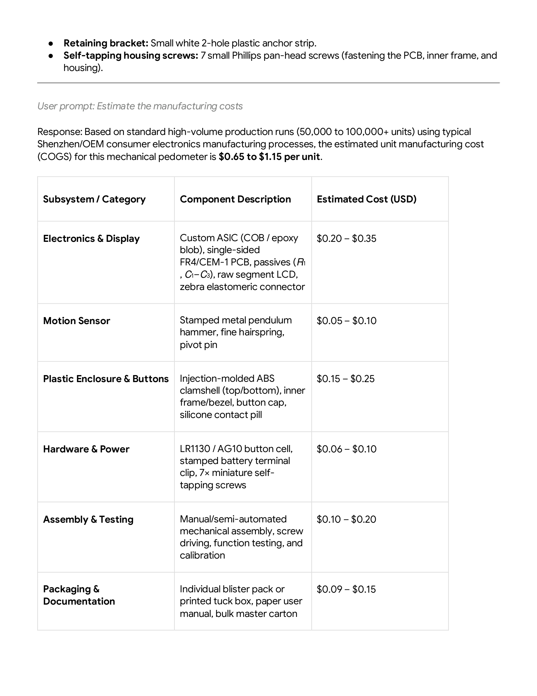
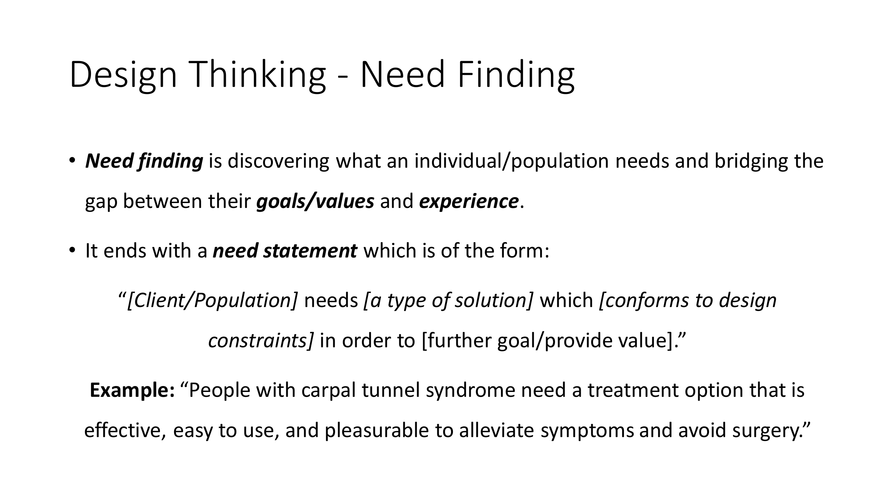
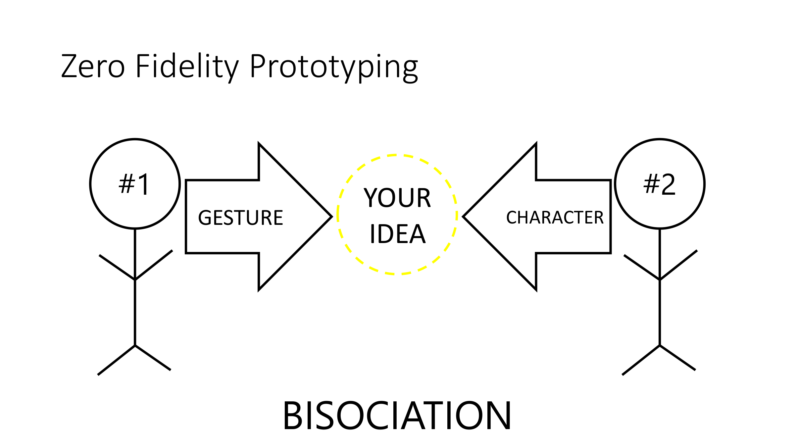
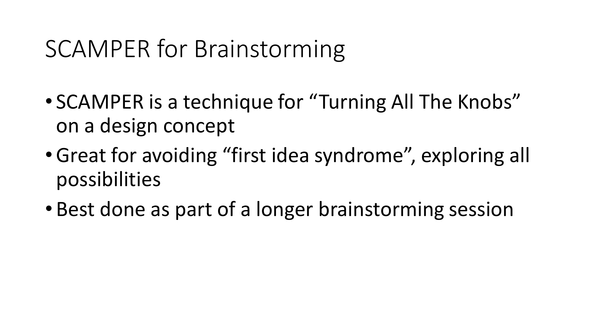
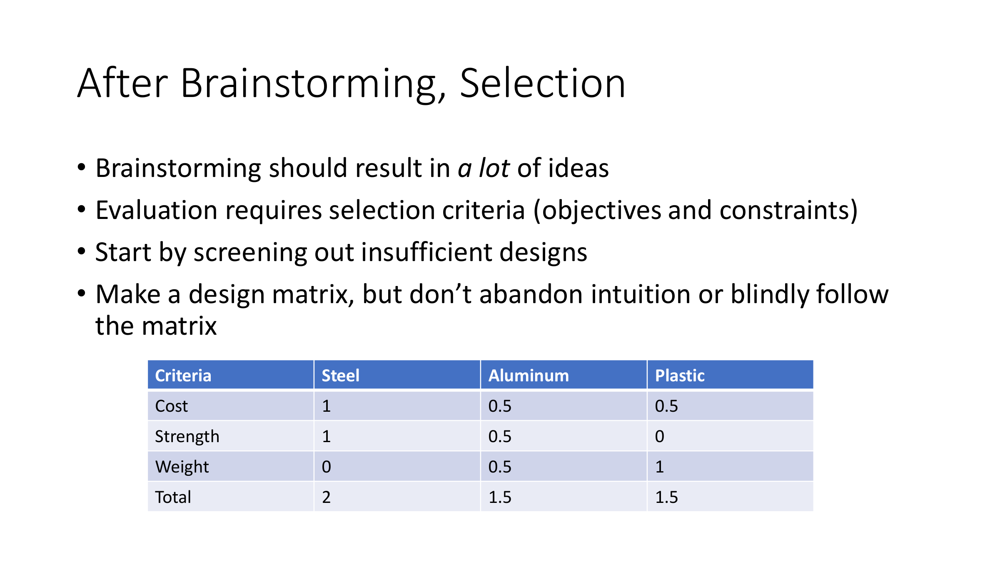

Hands-on electromechanical teardowns, big tech design reflections, zero-fidelity prototyping, and Generative AI SCAMPER ideation. Developed for BME 3113 (Wearable Technology Design), BME 1002 (Intro to BME), and the LTU BME High School Summer Camp.

Reflecting on consumer adoption, industrial form factors, and engineering design frameworks.
Watch the Fitbit designer interview video, review the "Design Lessons from Big Tech", and read one recent article from the Wearable Technology Insights website:
Empathize → Define → Ideate → Prototype → Test. Prioritizes patient comfort, ergonomic wearability, and non-stigmatizing form factors.
Divergent & convergent problem solving: Discover (broad inquiry) → Define (focus) → Develop (ideate solutions) → Deliver (prototype & test).
21 CFR 820.30: User Needs ↔ Design Inputs ↔ Design Outputs ↔ Medical Device. Enforces Design Verification & Validation (V&V).
Build – Measure – Learn fast feedback loops. Iterative breadboarding, battery power profiling, BLE telemetry, and firmware debugging.
Deconstructing consumer electronics to understand electromechanical transducers, parts lists, and manufacturing costs.
"You will need a screwdriver, the pedometer (or some other device from home that you can take apart) and a camera. You will need to use your computer to create a parts list, teardown instructions and process diagram of the pedometer components and assembly."
"Brainstorm all the components that you expect to find in the device before you take it apart. Write them down and show the instructor to claim your materials."
Review these curated teardown guides and schematics to guide your documentation:
Check that your device is functional prior to disassembling. Record display response, button actuation, and battery health.
Document the step-by-step disassembly sequence and record how each component was connected (snap fits, screws, zebra elastomeric strips, solder pads, ultrasonic welds).
Produce a comprehensive list of all components and count of similar components using actual engineering names (e.g., cantilever pendulum hammer, hairspring, FR4 PCB, raw segment LCD glass, elastomeric zebra strip, coin-cell terminal).
Describe each component's engineering function, estimate component costs at 10,000-unit scale ($0.65–$1.15 typical COGS), and identify potential commercial suppliers or manufacturing processes (injection molding, metal stamping, COB wire-bonding).
Produce a process diagram for how the pedometer and selected electromechanical components work together: from kinetic acceleration → pendulum deflection → switch contact → debounce logic → counter register → LCD multiplexer display.
Students photograph the disassembled PCB (IC: KD2213B) and leverage Multimodal AI to generate standard electrical schematics, bill of materials, and manufacturing cost models (COGS $0.65–$1.15, NRE tooling $10k–$20k).



Based on the curriculum by Prof. John Peponis and Dr. Eric Meyer. From Need Finding and Zero Fidelity Prototyping to AI-accelerated divergent brainstorming.

Need finding discovers what a target population values and bridges the gap between goals and daily experience. Students formulate need statements adhering to:

Students pair up (Partner #1 and #2) to spark radical concept exploration through Bisociation (combining an unexpected physical gesture with a character persona):

SCAMPER is an ideation technique for "Turning All The Knobs" on a design concept to eliminate "first idea syndrome":

Brainstorming yields a high volume of divergent concepts. Systematic evaluation requires objective selection criteria:
"I am designing a [device name / category, e.g. Light-up Costume / Smart Knee Sleeve] for a Wearable Technology Design Studio course. Here is my design concept so far: [describe initial concept & upload sketches]. Follow the SCAMPER prompts to brainstorm many variations on this design concept."
Benchmarking, teardown research, and interactive GitHub presentation of a commercial wearable technology product.
"We will be using GitHub to share both individual work and group projects. Create an account or log in. Create a repository for each new project to organize all your materials and work this semester. You should make it public when you are ready to share with the class."
To practice making and sharing these documents you will identify a wearable technology device that is interesting and that you would like to learn about and share with the class.
An authentic implementation of the 10-slide requirements built by Dr. Meyer and deployed on GitHub Pages. Features interactive slide navigation, folded flex circuit teardown photos, and market failure analysis. Download the complete guide PDF: Ringly_SmartRing_WearableStudio_Example.pdf.